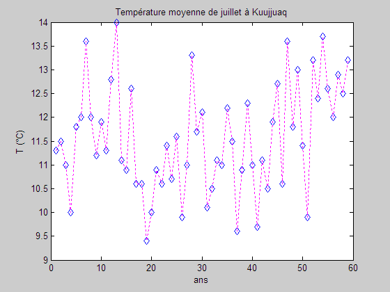

Températures mensuelles de juillet à Kuujjuaq
clear; close all; clc; Temperature = load('Kuujjuaq.dat'); plot(Temperature,'db'); hold on; % afin d'ajouter la courbe suivante. plot(Temperature,':m'); % grid on; pas de quadrillage xlabel('ans'); ylabel('T (°C)'); title(['Température moyenne de juillet ',... 'à Kuujjuaq']);

help plot
PLOT Linear plot.
PLOT(X,Y) plots vector Y versus vector X. If X or Y is a matrix,
then the vector is plotted versus the rows or columns of the matrix,
whichever line up. If X is a scalar and Y is a vector, disconnected
line objects are created and plotted as discrete points vertically at
X.
PLOT(Y) plots the columns of Y versus their index.
If Y is complex, PLOT(Y) is equivalent to PLOT(real(Y),imag(Y)).
In all other uses of PLOT, the imaginary part is ignored.
Various line types, plot symbols and colors may be obtained with
PLOT(X,Y,S) where S is a character string made from one element
from any or all the following 3 columns:
b blue . point - solid
g green o circle : dotted
r red x x-mark -. dashdot
c cyan + plus -- dashed
m magenta * star (none) no line
y yellow s square
k black d diamond
w white v triangle (down)
^ triangle (up)
< triangle (left)
> triangle (right)
p pentagram
h hexagram
For example, PLOT(X,Y,'c+:') plots a cyan dotted line with a plus
at each data point; PLOT(X,Y,'bd') plots blue diamond at each data
point but does not draw any line.
PLOT(X1,Y1,S1,X2,Y2,S2,X3,Y3,S3,...) combines the plots defined by
the (X,Y,S) triples, where the X's and Y's are vectors or matrices
and the S's are strings.
For example, PLOT(X,Y,'y-',X,Y,'go') plots the data twice, with a
solid yellow line interpolating green circles at the data points.
The PLOT command, if no color is specified, makes automatic use of
the colors specified by the axes ColorOrder property. The default
ColorOrder is listed in the table above for color systems where the
default is blue for one line, and for multiple lines, to cycle
through the first six colors in the table. For monochrome systems,
PLOT cycles over the axes LineStyleOrder property.
If you do not specify a marker type, PLOT uses no marker.
If you do not specify a line style, PLOT uses a solid line.
PLOT(AX,...) plots into the axes with handle AX.
PLOT returns a column vector of handles to lineseries objects, one
handle per plotted line.
The X,Y pairs, or X,Y,S triples, can be followed by
parameter/value pairs to specify additional properties
of the lines. For example, PLOT(X,Y,'LineWidth',2,'Color',[.6 0 0])
will create a plot with a dark red line width of 2 points.
Example
x = -pi:pi/10:pi;
y = tan(sin(x)) - sin(tan(x));
plot(x,y,'--rs','LineWidth',2,...
'MarkerEdgeColor','k',...
'MarkerFaceColor','g',...
'MarkerSize',10)
See also PLOTTOOLS, SEMILOGX, SEMILOGY, LOGLOG, PLOTYY, PLOT3, GRID,
TITLE, XLABEL, YLABEL, AXIS, AXES, HOLD, LEGEND, SUBPLOT, SCATTER.
Overloaded methods:
timeseries/plot
commscope.plot
channel.plot
dspdata.plot
doc plot